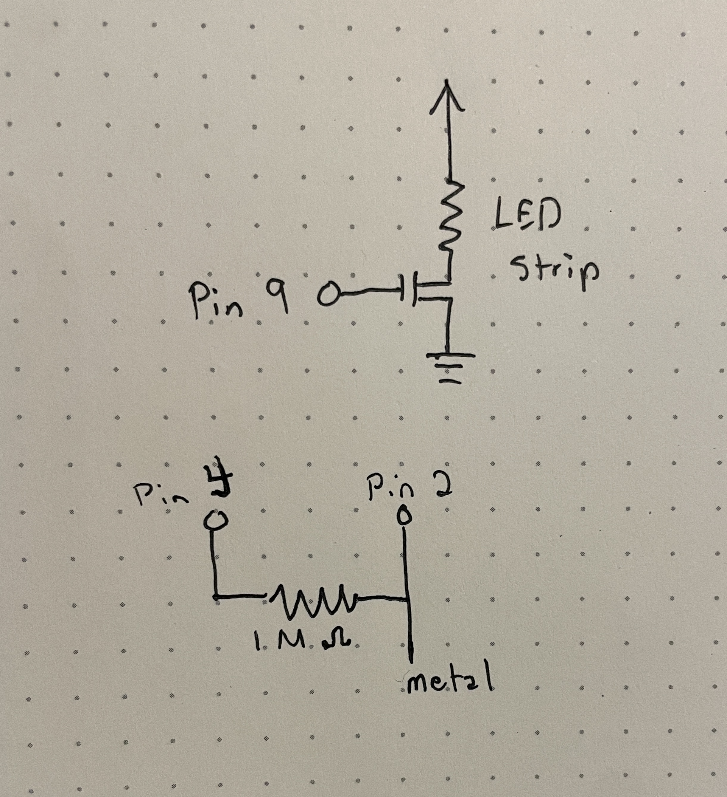

I had a bit of difficulty building this one, so this assignment is only going to show the schematic and firmware. Shout out to Mileena Ros who took this class before for helping me with the firmware.

The image above shows the schematic. The LED is powered by 12 V, which is regulated by an N-MOSFET transistor connected to pin 9 of the Arduino. The LED strip draws 1.5A of current, which is well below the transistor's maximum rating of 32A. A capacitive touch sensor is created by attaching a piece of metal and 1M ohm resistor between pins 2 and 4. The 1M ohm resistance is a good value for detecting whether someone is physically touching the metal.
// References: Arduino Playground Capacitive Sensing Library reference at // https://playground.arduino.cc/Main/CapacitiveSensor/ and Fade example #include// define the capacitive sensor pins CapacitiveSensor cs_4_2 = CapacitiveSensor(4, 2); // define pin 9 as led pin int led = 9; // create constants for fading int brightness = 0; int fadeAmount = 5; void setup() { // initialize pin 9 to correspond to led strip pinMode(led, OUTPUT); // calibrate every 4 seconds cs_4_2.set_CS_AutocaL_Millis(4000); } void loop() { // keep track of the capacitive sensor value long total = cs_4_2.capacitiveSensor(30); // if the capacitive sensor has a high value // fade LED if (total >= 1000) { // set LED brightness analogWrite(led, brightness); // change the brightness of the led strip based on the fade amount constant brightness = brightness + fadeAmount; // if brightness is outside the LED range reverse the direction that the LEDs are fading in if (brightness <= 0 || brightness >= 255) { fadeAmount = -fadeAmount; } // delay the fade effect delay(30); } }